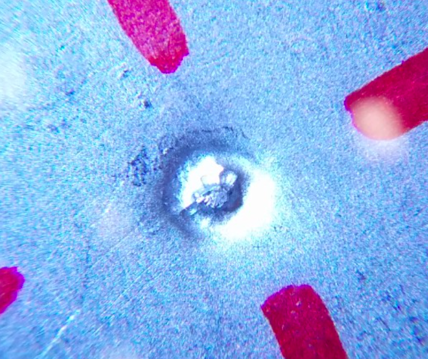
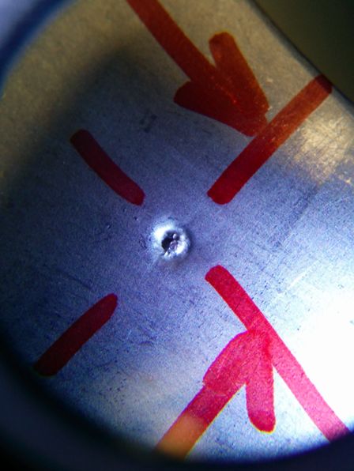
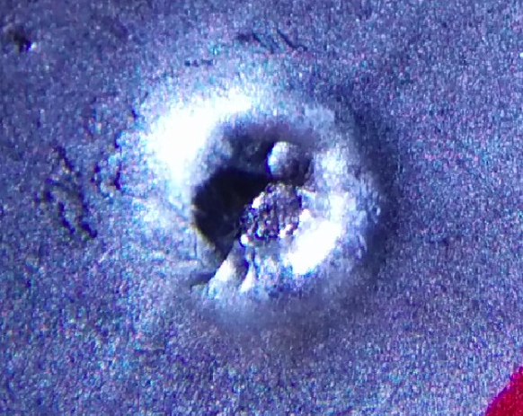
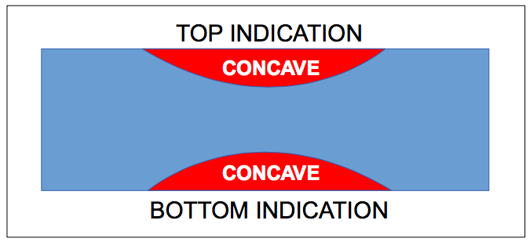
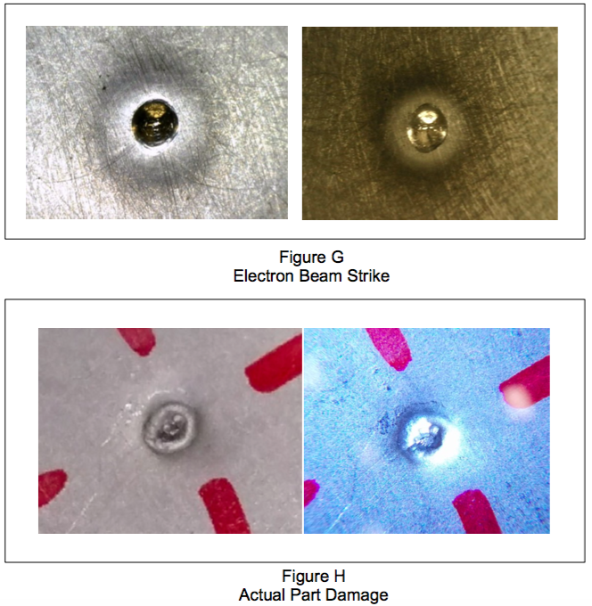
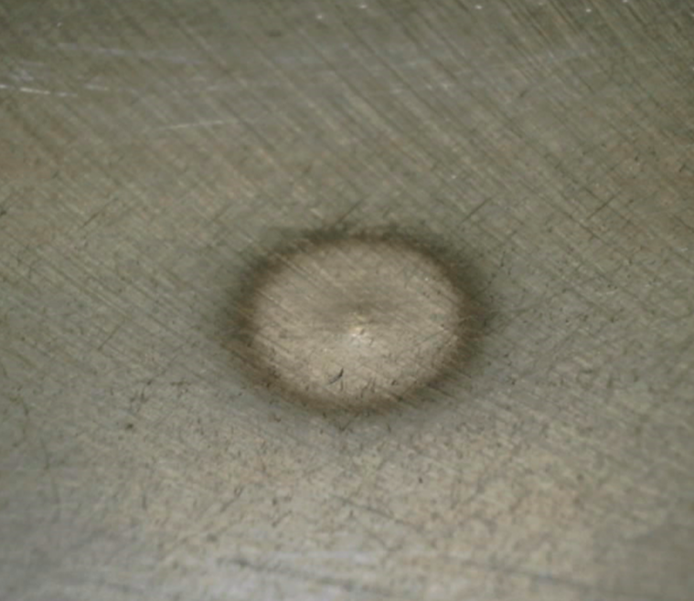

Damage Control
Detailed Problem Solving for a Nonconformance Issue.
After all processes were finished,
we were notified of a small indication of damage that was
observed upon receiving inspection at the customers shop. This document is to outline
our process in handling the part and to provide insight on possible areas in processing
where the part could have been damaged and how to prevent this from happening in the future. This nonconformance issue
is handled with a very scientific approach, and rules are laid down to prevent this from happening in the future.

– Indication of Damage

– Indication of Damage

– Recast : The damage appears to have happened from an electrical source, connector, or clamp of some kind. There is a recast on the top edge of the damage, which is very suspicious of heat applied to the part. There was no process that involves electrical connectors being hard attached to the part.

– Concavity : The damage shows on both sides of the part, as if something was clamped down onto the assembly. The nature of the ding is concave on both sides, indicating that a considerable amount of force was exerted down onto the part from both ends, causing the damage.

– Electron Beam Strike : In order to show what an accidental Electron Beam Welding strike on parent material looks like, we have taken a sample part which was taken from a previous qualification. As you can clearly see, by comparison- the Weld Beam looks vastly different from the indicated damage on the part. The actual beam strike is a very clean indication, unlike the damage in question. The opposite end of the strike shows a convex nature rather than a concave indication like the damage in question. The weld schedule was used to fire upon the sample material, ensuring the power and other variables are exactly as they would be during the welding of a production part.

– This photo shows the back side of the EBW strike, giving visual confirmation that the opposite end of the strike is convex.
– Conclusion : Upon detailed observation of the damage in question, we have come to the conclusion that this damage occurred by means of a clamp that was applied down onto the part with a considerable amount of pressure. The material was dimpled on the outer and inner surface, leaving concave indications. The clamp used must have been hot, or live with electricity to cause the recast on the part. The processes here involve no such type of clamps or anything that could cause this damage. Upon discussion with the outside vendor, their process does not involve anything like this either.
The damage on the Spar Assembly has most definitely not been caused by an accidental beam strike, or grounding problem as the indication looks vastly different as well as being concave on both ends of the damage. There will be a considerable change in processing to scour every inch of the part during all steps of processing to ensure something like this does not slip through the processing and make it all the way back to the customer.
– Detailed Report. Click here for the full file.